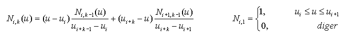

|
Eðriler, analitik ve sentetik olarak iki gruba ayrýlabilir:
Analitik eðriler; doðrular, konik kesitler (çember,
elips, parabol, hiperbol), sinüs eðrisi vb. eðrilerdir. Bu
eðrilerin analitik bir eþitliði vardýr.
Sentetik eðriler ise adýndan da anlaþýlacaðý üzere
yapay eðrilerdir (Bezier, Hermite Spline, B-Spline, NURBS,
vb.). Bu eðriler bir dizi kontrol noktasýndan belirli bir
algoritma vasýtasýyla (interpolasyon veya yaklaþým) hesaplanan
eðri noktalarýnýn interpolasyonu ile oluþturulur.
Geliþen teknoloji ve estetik duygulara cevap verecek
ürünlerin dizaynýnda analitik eðriler yetersiz kalmýþtýr ve
sentetik eðriler geliþtirilmiþtir. Çevremiz incelendiðinde
birçok ürünün sentetik eðrilerle tasarlandýðý
görülecektir. Arabalar, gemi gövdeleri, uçak gövde ve kanatlarý,
pervaneler, ayakkabýlar, þiþeler vb.
NURBS (Non Uniform Rational B-Spline) eðrileri
sentetik eðrilerin en genel hali olarak düþünülebilir. B-spline
ve Bezier eðrileri NURBS eðrilerinin özel bir halidir. Ayrýca
NURBS eðrilerinin bir avantajý da analitik, doðru ve konik
kesitleri tanýmlayabilmesidir.
B-spline da Bezier eðrilerinin genelleþtirilmiþ halidir.
Bir Bezier eðrisinin derecesi, kontrol noktasý sayýsýnýn bir
eksiðidir. Yani kontrol noktasý sayýsý artarsa derece yükselir;
Bu da hesaplamalarý zorlaþtýrýr. Ayrýca bir kontrol noktasýnýn
deðiþmesi tüm eðriyi deðiþtirir, yani bölgesel kontrole izin
vermez.
NURBS
eðrileri, tasarýmda ve geometrik þekillere ait verilerinin
dönüþtürülmesinde endüstri standardý olmuþtur. Birçok ulusal
ve uluslararasý standartlarda (IGES, STEP, PHIGS, vb) NURBS
tanýmlanmýþtýr.
NURBS algoritmalarý hýzlý ve sayýsal olarak kararlýdýr.
Birleþtirici matematiksel temeli, hem analitik þekilleri (doðru,
konik kesitler, 2. derece yüzeyler, vb) hem de serbest þekilli
(yapay) eðri ve yüzeyleri (Araba gövdeleri, uçak gövde ve
kanatlarý, gemi gövdeleri, vb) tanýmlayabilmektedir. NURBS;
B-Spline ve Bezier, eðri ve yüzeylerini kapsamaktadýr.
n=1
d=1 kenetli,eþit aralýklý U = { 0,0,1,1} w = {1,1}
n=4
d=1 kenetli,eþit aralýklý U = { 0,0,1,2,3,4,4} w = {1,1,1,1,1}
n=2
d=2 kenetli,eþit aralýklý U = { 0,0,0,1,1,1} w = {1,0.707107,1}
n=2
d=2 kenetli,eþit aralýklý U = { 0,0,0,1,1,1} w = {1,0.85067,1}
n=8 d=2 kenetli, eþit aralýksýz
U
= {0,0,0,0.25,0.25,0.5 ,0.5,0.75,0.75,1,1,1}
w = {1,0.8819,1, 0.8819,1, 0.8819,1, 0.8819,1}
d.
derecede (k. sýra k=d+1), m+1 bað dan oluþan bir
bað vektörü U = { u0, u1,
.., um } ve her biri negatif olmayan aðýrlýk
wi (wi >= 0) vektörüne
sahip bir dizi (n+1 adet) kontrol noktasý P0,
P1, P2 ..., Pn , verisi
ile bir NUBS eðrisi aþaðýdaki þekilde tanýmlanabilir.
P(u) : NURBS eðrisi
Ri,k : Oransal B-Spline temel
fonksiyonu veya NURBS temel fonksiyonu
Ni,k : B-Spline temel fonksiyonu
Pi
: n+1 adet kontrol noktasý P0, P1,
P2 ..., Pn
wi
: Kontrol noktasýnýn aðýrlýðý, wi >= 0
U
: Bað vektörü, U = { u0, u1, ... ,
um-1, um }
k : Sýra, k=d+1
d : Derece

m+1=n+1+k => m=n+k olacak þekilde U =
{ u0, u1, ... , um-1, um
} bað vektörü oluþturulur.
n=3,k=3
için Bað Vektörleri
·
Eþit aralýklý ve periyodik bað vektörü
um-um-1
=C dir U = {0,1,2,3,4,5,6}
·
Eþit aralýklý, periyodik olmayan ve kenetli bað vektörü
U
= {0,0,0,1,2,2,2}
Ýlk ve son bað parametreleri k adet tekrarlanýrsa
eðri, ilk ve son kontrol noktalarýndan geçer ve bu tip eðrilere
kenetlenmiþ eðri denir.
·
Eþit aralýksýz (NURBS) bað vektörü
U = {0,1,2,3,3,3,4} U = {0,0,0,1,2,5,5}
Yukarýda
verilen NURBS tanýmýnda eðer tüm wi =1 ve bað vektörü
eþit aralýklý seçilirse eðri B-Spline dýr.
P(u) : B-Spline eðrisi
Ni,k : B-Spline temel fonksiyonu
Pi : n+1 adet kontrol noktasý
P0, P1, P2 ..., Pn
U
: Bað vektörü, { u0, u1, ... , um-1,
um }
k : Sýra, k=d+1
d : Derece
Ni,k(u) B-Spline temel
fonksiyonu:
Eðer B-Spline
eðrisinin kontrol noktasý sayýsý n+1=k ise eðri Bezier eðrisidir.
Bezier
eðrisi aþaðýdaki þekilde de tanýmlanabilir.
P(u) :
Bezier eðrisi
Bi,n
: Bernstain temel fonksiyonu
Cn,i
: Binominal katsayýlar
Pi
: n+1 adet kontrol noktasý P0, P1, P2
..., Pn

NURBS, B-Spline eðrisinin
genel bir hali olduðundan, onun tüm özelliklerine sahiptir.
NURBS temel fonksiyonun özellikleri aþaðýda açýklanmaya çalýþýlmýþtýr.
1.
Ri,k(u) , u parametresine baðlý k-1. dereceden oransal bir fonksiyondur.
2.
Pozitivite; tüm i ve k için
, Ri,k(u) pozitiftir.
3.
Bölgesellik; Ri,k(u), [ui,ui+k)
aralýðýnda sýfýrdan farklýdýr.
[ui,ui+p+1)
aralýðýnda Ni,k(u) sýfýrdan farklý
olduðundan Ri,k(u) da sýfýrdan farklýdýr.
Not: Tüm wi lerin negatif olmadýðý farz
edilmiþtir.
4.
Herhangi bir bað aralýðýnda [ui, ui+1),
en fazla k adet k-1 dereceli temel fonksiyon sýfýrdan farklýdýr.
Ri-k,k(u), Ri-k+1,k(u),
Ri-k+2,k(u), ..., ve Ri,k(u)
5.
Birim Oransallýðý; [ui, ui+1)
aralýðýnda tüm sýfýrdan farklý k-1 dereceli temel fonksiyonlarýn
toplamý 1 dir.
6.
Bað sayýsý m+1, temel fonksiyonun derecesi
d ve kontrol noktasý sayýsý n+1 ise m = n
+ d + 1 veya m=n+k dýr.
7.
Temel fonksiyon Ri,k(u), [ui,
ui+k+1 ) aralýðýnda bað parametrelerine
denk gelen birleþme noktalarýyla baðlanan k-1 dereceli oransal
fonksiyonlarýn birleþimiyle elde edilen karma bir fonksiyondur.
8.
s adet tekrarlanan bir bað noktasýnda, Ri,k(u)
Ck-s sürekliliðine sahiptir.
Bu sebeple, tekrar sayýsýný arttýrmak sürekliliðin seviyesini
düþürür ve derece arttýrýlarak süreklilik seviyesi arttýrýlabilir.
9.
Tüm i deðerleri için wi = c (sýfýrdan farklý
sabit) ise, Ri,k(u) = Ni,k(u)
Yani B-Spline temel fonksiyonu NURBS temel fonksiyonunun özel
bir durumudur.
NURBS Eðrilerinin Önemli Özellikleri
NURBS
eðrileri B-Spline eðrileri gibi bað vektörünün seçimine göre
açýk, kapalý, periyodik veya kenetli
olarak sýnýflandýrýlabilir. Bað vektöründe ilk k adet ve son
k adet bað parametresi eþit seçilirse kenetlenmiþ bir eðri
oluþur, yani eðrinin baþlangýcý, ilk kontrol noktasý ve bitiþi,
son kontrol noktasý ile çakýþýktýr.
n=5
d=2 kenetli,eþit aralýklý U = {0,0,0,1,2,3,4,4,4}
n=5
d=2 kenetli,eþit aralýksýz U = {0,0,0,1,2,3.843,4,4,4}
n=6 d=2 kenetli,eþit aralýksýz U = {0,0,0,1,2,3,3.843,4,4,4}
n=6
d=2 kapalý,periyodik,eþit aralýklý U = {-2,-1,0,1,2,3,4,5,6,7}
n=5
d=2 kapalý,periyodik,eþit aralýklý U = {-2,-1,0,1,2,3,4,5,6}
1.
NURBS eðrisi P(u) , her bir parçacýðý k-1. dereceden oransal
eðri olan, parçalý bir eðridir. Her bir
parçacýða k-1. dereceden Oransal Bezier eðrisi denir.
NURBS,n=6 d=2 kenetli,eþit aralýklý U = {0,0,0,1,2,3,4,5,5,5}
BEZIER
Parça Eðrileri; n=2 d=2 kenetli,eþit aralýklý U = {0,0,0,1,1,1}
2.
m = n +
k dýr.
NURBS,n=4 d=2 k=d+1=3 m=n+k=7
kenetli,eþit aralýklý
U
= {0,0,0,1,2,3,3,3}
NURBS,n=5 d=3 k=d+1=4 m=n+k=9
kenetli,eþit aralýklý
U = {0,0,0,0,1,2,3,3,3,3}
3.
Kenetlenmiþ bir NURBS eðrisi P(u); P0 ve Pn
kontrol noktalarýndan geçer.
NURBS,n=5 d=3 kenetli,eþit
aralýklý U = {0,0,0,0,1,2,3,3,3,3}
Kenetleme için uç noktalarda
bað parametresi k(d+1) adet tekrarlanýr.
4.
Dýþbükey kabuk özelliði; NURBS eðrisi kontrol
noktalarýnýn oluþturduðu dýþbükey bir kabuk içindedir ve ayrýca
eðer u ; [ui,ui+1)
aralýðýnda ise P(u); Pi-k, Pi-k+1,
..., Pi kontrol noktalarýnýn oluþturduðu
dýþbükey kabuk içindedir. Tüm wi aðýrlýklarýnýn
negatif olmamasý gerektiðini daha önce belirtilmiþti. Eðer
bazýlarý negatif deðer alýrsa dýþbükey kabuk özelliði çalýþmaz.
Aþaðýda soldaki þekilde n=2 ve k=3 olan ve ilk üç ve son üç
bað parametresi kenetlenmiþ bir NURBS tür. Ýlk ve son kontrol
noktasýnýn aðýrlýðý 1 ve ortadaki kontrol noktasýnýn aðýrlýðý
ise 0.5 tir. Bu eðri gerçekte eliptik bir yaydýr. Eðri segmenti
dýþbükey kabuk içinde uzanmaktadýr.
Ortadaki
þekilde orta noktanýn aðýrlýðý 0 seçilmiþtir, bu sebeple bu
noktanýn eðrinin þekline bir etkisi olmamýþtýr.Sonuçta doðrusal
bir eðri oluþmuþtur. Eðri hala dýþbükey kabuk içindedir. Saðdaki
þekilde ise aðýrlýk -0.5 olarak seçilmiþtir ve eðri dýþbükey
kabuðun dýþýna çýkmýþtýr.
5.
Bölgesel Düzenleme; Pi kontrol
noktasýnýn deðiþtirilmesi P(u) eðrisini sadece [ui,
ui+k) aralýðýnda etkiler. Bu özellik B-Spline
temel fonksiyonun getirdiði bir özelliktir. Ri,k(u),
[ui, ui+k) aralýðýnda
sýfýrdan farklýdýr. Eðer u bu aralýkta deðilse Ri,k(u)
sýfýr olacaðýnda Ri,k(u)Pi
nin P(u) hesabýnda bir etkisi olmayacaktýr. Diðer taraftan
u belirtilen aralýkta ise Ri,k(u)
sýfýrdan farklý bir deðer alýr ve Ri,k(u)Pi
yani P(u) deðiþir.
Bu özellik eðri
dizaynýnda çok önemlidir. Çünkü eðri, genel þekli deðiþtirilmeden
belirli bölgelerde düzenlenebilir. Eðer daha hassas düzenlemeler
yapýlmasý gerekiyorsa bað vektörüne yeni bað parametreleri
eklenerek eðrinin þekli bozulmadan yeni kontrol noktalarý
elde edilir. Bu noktalarýn oluþturulduðu bölgede eðri daha
hassas düzenlenebilir.
Kontrol
noktasý deðiþtirilerek eðrinin düzenlenmesi. P4
noktasý deðiþtirildiðinde eðri sadece [u4,u7) aralýðýnda
deðiþir.
n=9
d=2 kenetli,eþit aralýklý U = {0,0,0,1,2,3,4,5,6,7,8,8,8}
n=7
d=2 kenetli,eþit aralýklý U = { 0,0,0,1,2,3,4,5,6,6,6 }
Kontrol
noktasýnýn aðýrlýðý (Homojen koordinatlarda 4.boyut) deðiþtirilerek
te eðri düzenlenebilir. P6 noktasýnýn aðýrlýðý deðiþtirildiðinde
eðri yine sadece [u6,u9) aralýðýnda deðiþir.
n=7 d=2 kenetli,eþit aralýklý U = { 0,0,0,1,2,3,4,5,6,6,6 }
Mikro düzeyde lokal kontrol
için bað vektörüne yeni bað parametresi eklenerek eðri þekli
deðiþtirilmeden eklenen bað parametresine baðlý olarak yeni
kontrol noktalarý elde edilir. Elde edilen noktalarýn deðiþtirilmesi
ile eðri o bölgede daha hassas düzenlenebilir. Aþaðýdaki þekilde
P4 noktasý deðiþtirildiðinde eðri [u4,u7) aralýðýnda
deðiþmektedir. Eðriyi [u4,u5) aralýðýnda ve P5 noktasýný
deðiþtirmeden düzenlemek için yeni u6 =3.898 parametresi
eklenerek yeni P4 ve P5 kontrol noktalarý
bulunur. Yeni sistemde P5 kontrol noktasý deðiþtirilerek
eðri istediðimiz þekilde düzenlenebilir.
n=5 d=2 kenetli,eþit aralýklý
U = {0,0,0,1,2,3,4,4,4}
n=6
d=2 kenetli,eþit aralýksýz U = {0,0,0,1,2,3,3.898,4,4,4}
6.
P(u), s katsayýlý bað da Ck-s sürekliliðine
haizdir. Eðer u bir bað parametresine eþit deðilse;
P(u), k-1 dereceli eðri segmenti üzerindedir ve k-1.
seviyeden differanse edilebilir. Fakat u Ri,k(u)
nýn sýfýrdan farklý bir bað parametresine eþitse,Ri,k(u)
ve P(u), Ck-s sürekliliðine haizdir.
7.
Dönüþüm azaltma özelliði; eðer
eðri düzlemde (veya uzay) ise eðri ile bir doðrunun (veya
düzlem) oluþturduðu kesiþimler doðru ile eðri kontrol noktalarýnýn
oluþturduðu çoklu doðrunun oluþturduðu kesiþimlerden fazla
olamaz. (Not: az olabilir.)
8.
B-Spline Eðrileri ve Bezier Eðrileri, NURBS eðrilerinin özel durumlarýdýr.
Tüm aðýrlýklar eþitse bir NURBS eðrisi B-spline eðrisi
olur. Ýlave olarak n = k-1 ise (eðrinin derecesi kontrol
noktasý sayýsýnýn bir eksiði) ve bað vektöründeki bað parametresi
sayýsý m=2k-1 ve bað vektörü kenetlenmiþ ise NURBS eðrisi
Bezier eðrisine indirgenebilir.
9.
Projektif deðiþmezlik; NURBS
eðrisine projektif bir dönüþüm uygulanacaksa, sonuç; dönüþümün
eðrinin kontrol noktalarýna uygulanmasý ile bulunan yeni noktalarýn,
kontrol noktasý olarak kullanýlmasý ile elde edilecek NURBS
eðrisidir.
Not: Bezier
ve B-spline eðrileri sadece affine deðiþmezlik özelliðine
sahiptirler.
|